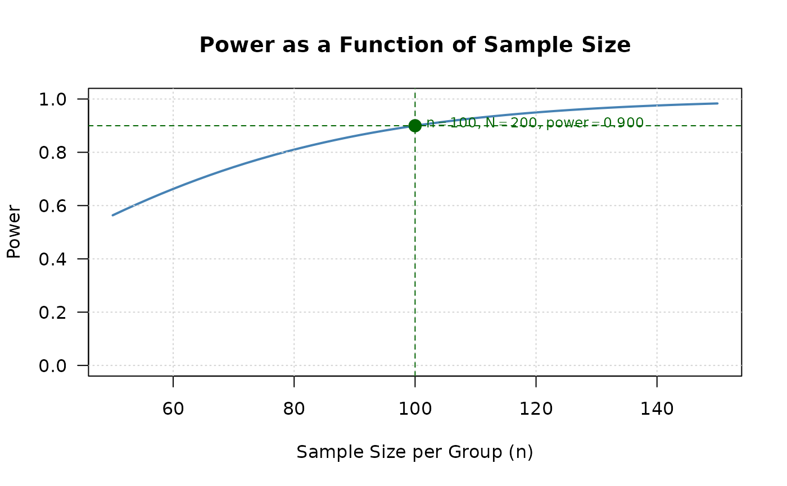
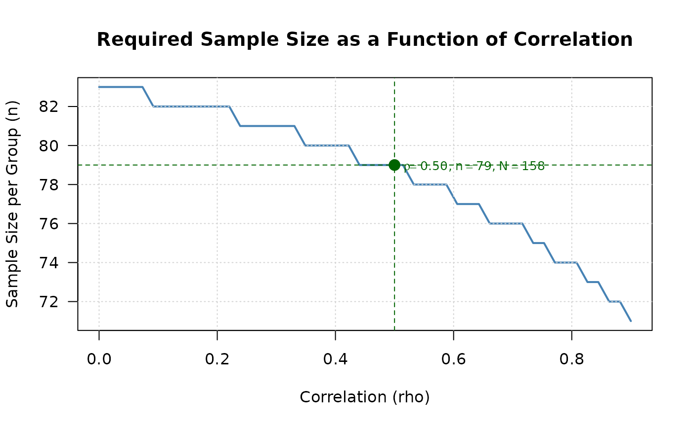
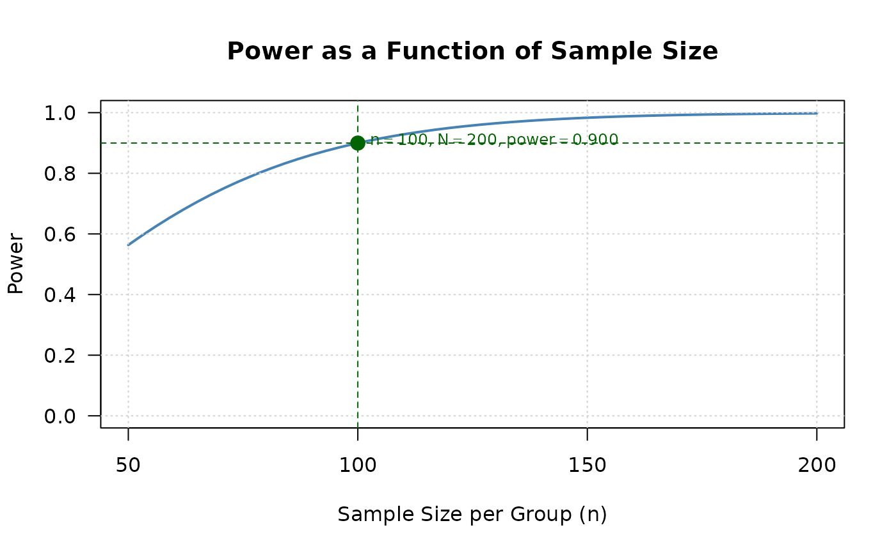

Visualizes power or sample size relationships for two co-primary endpoints designs. The function automatically determines the appropriate plot based on the input object.
Usage
# S3 method for class 'twoCoprimary'
plot(
x,
type = NULL,
n_points = 50,
n_range = NULL,
rho_range = NULL,
col = "steelblue",
lwd = 2,
main = NULL,
xlab = NULL,
ylab = NULL,
show_reference = TRUE,
...
)Arguments
- x
An object of class "twoCoprimary" from power or sample size calculation functions
- type
Type of plot to generate:
- "power_curve"
Power as a function of sample size (default for power calculation results)
- "sample_size_rho"
Sample size as a function of correlation (default for sample size calculation results)
- "effect_contour"
Contour plot showing combinations of effect sizes achieving target power
- n_points
Number of points to compute for the curve. Default is 50.
- n_range
Sample size range for power_curve plot. If NULL, automatically determined from the object.
- rho_range
Correlation range for sample_size_rho plot. Default is seq(0, 0.9, length.out = n_points).
- col
Line color. Default is "steelblue".
- lwd
Line width. Default is 2.
- main
Plot title. If NULL, automatically generated.
- xlab
X-axis label. If NULL, automatically generated.
- ylab
Y-axis label. If NULL, automatically generated.
- show_reference
Logical. If TRUE, shows reference lines (e.g., target power, current values). Default is TRUE.
- ...
Additional graphical parameters passed to plot()
Details
The function creates publication-quality plots to visualize the relationship
between design parameters and statistical properties. The plot type is
automatically selected based on the input object, but can be overridden
using the type argument.
For power calculation results (when n1 and n2 are specified), the default is to show how power changes with sample size.
For sample size calculation results (when power is specified), the default is to show how required sample size changes with correlation.
The function works with all endpoint types (continuous, binary, mixed) by automatically detecting the appropriate parameters from the input object.
Examples
# Power calculation result
result_power <- power2Continuous(
n1 = 100, n2 = 100,
delta1 = 0.5, delta2 = 0.5,
sd1 = 1, sd2 = 1,
rho = 0.5, alpha = 0.025,
known_var = TRUE
)
plot(result_power) # Shows power curve

# Sample size calculation result
result_ss <- ss2Continuous(
delta1 = 0.5, delta2 = 0.5,
sd1 = 1, sd2 = 1,
rho = 0.5, r = 1,
alpha = 0.025, beta = 0.2,
known_var = TRUE
)
plot(result_ss) # Shows sample size vs correlation

# Custom plot with specified type
plot(result_power, type = "power_curve", n_range = c(50, 200))
